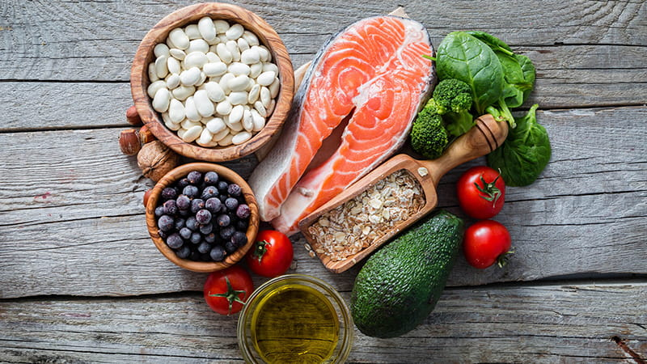

Home
Tips
Reasons to Stay Healthy
Statistics
What a Healthy Life Looks Like
Media
Articles
Contact Us
Nutrition and General Health - Articles About Healthy Eating
Medical News Today - What are the benefits of eating healthy?

Eat Right. - Diet Quality: The Key to Healthy Eating
Everyday Health - Why Are Healthy Eating Habits Important?
The Washington Post - At any age, a healthy diet can extend your life